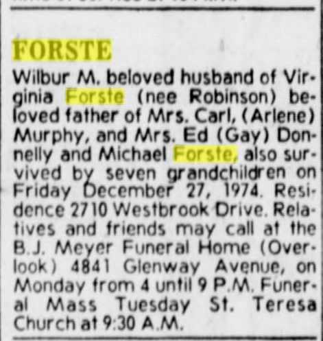
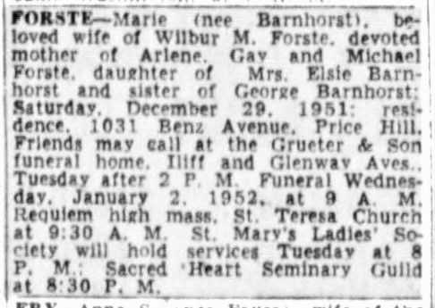

1916 Year on the shared marker; the 1950 Census index instead estimates 1917.
8 January 1936 Married Wilbur Forste at St. Agnes, recorded in the original Hamilton County marriage-banns register.
11 November 1936 Arlene Marie Forste’s Kentucky birth-index entry names Marie Barnhorst as her mother; the entry is cited in Arlene’s profile.
18 April 1950 The 1950 Census index lists Marie P. and Wilbur M. Forste with daughters Arlene and Gabrielle.
29 December 1951 Marie’s obituary clipping reports her death and names her mother Mrs. Elsie Barnhorst, brother George Barnhorst, husband Wilbur, and children Arlene, Gay, and Michael.
Life Story
Marie Elise Barnhorst married Wilbur Forste at St. Agnes on 8 January 1936, as recorded in the original Hamilton County marriage-banns register. Their shared marker gives her years as 1916–1951; the 1950 Census index estimates her birth in 1917, Ohio.
Marie’s obituary clipping names her mother as Mrs. Elsie Barnhorst and her brother as George Barnhorst. A transcription of George Anthony Barnhorst’s Social Security application names George Barnhorst and Elsie M. Doerflein as his parents. The names and sibling link make them the probable parents of Marie, but no direct birth record for Marie has yet confirmed her father.
Her obituary names children Arlene, Gay, and Michael. The 1950 Census index lists daughters Arlene and Gabrielle; Gabrielle is treated here as the likely identity behind “Gay,” not as a conclusively proven name match. The record dates and source limitations are set out in Research Notes.
Photographs & Family Gallery

Wilbur M. Forste obituary clipping. Names wife Virginia Forste (née Robinson) and children Arlene, Gay, and Michael. Image supplied from Wilbur’s Find a Grave memorial; the newspaper title and issue date are not visible in the crop.

Marie (née Barnhorst) Forste obituary clipping. Names husband Wilbur, children Arlene, Gay, and Michael, mother Mrs. Elsie Barnhorst, and brother George Barnhorst. Image supplied from Wilbur’s Find a Grave memorial; the newspaper title and issue date are not visible in the crop.Shared marker: Wilbur, “Father,” 1908–1974; Marie, “Mother,” 1916–1951. Photograph supplied from Wilbur’s Find a Grave memorial.
Sources & Records
Marie Forste obituary clipping, supplied from Wilbur Mark Forste’s Find a Grave memorial; names husband, three children, mother Mrs. Elsie Barnhorst, brother George Barnhorst, and death date 29 December 1951. Newspaper title/date are cropped out.
1950 Census index; lists Wilbur M. and Marie P. Forste with daughters Arlene and Gabrielle in Cincinnati. The original schedule has not been transcribed in this review.
Arlene’s profile cites a Kentucky birth-index entry naming Marie Barnhorst as her mother.
Research Notes and Open Questions
Parent assignment: Marie’s obituary directly names her mother as Mrs. Elsie Barnhorst and her brother as George Barnhorst. George Anthony Barnhorst’s SS-5 transcription names George Barnhorst and Elsie M. Doerflein as his parents. Taken together, this supports George Barnhorst and Elsie M. Doerflein as Marie’s probable parents, but there is no direct birth record for Marie or a source explicitly naming both parents as hers. Treat the father link as probable, not established. No marriage record for George and Elsie has been located; the Gen VII pair entry is a working family grouping, not proof of marriage.
Brother identity: the obituary says “George Barnhorst.” The SS-5 transcription identifies George A. (George Anthony) Barnhorst, born 8 November 1913 and died 24 February 2000, with the matching parents. This is likely the brother named in the obituary; no direct record yet states their sibling relationship. No profile has been created for him.
Children: the obituary and Wilbur’s 1974 obituary call a daughter Gay. The 1950 Census index lists Gabrielle in the household as a daughter. Gabrielle is the likely match for Gay; a later record identifying her by both names has not yet been found.
Birth-year conflict: the shared marker gives 1916; the 1950 Census index estimates 1917. Exact birth date and parents remain open.
The newspaper masthead and publication date for the supplied 1951 obituary clipping are not visible. Keep citation to the user-supplied Find a Grave photo collection until the newspaper issue is recovered.
An AncientFaces profile reports an Elsie Barnhorst in Cincinnati (25 November 1890–June 1970), but it does not identify Marie or provide a family link. Treat these dates only as an unverified lead, not as established facts for Marie’s mother.
Next records: inspect Marie’s original birth record; locate Elsie’s and George’s marriage and census records; obtain/review George Anthony’s original SS-5 and death record; search church and cemetery records for the Barnhorst family.